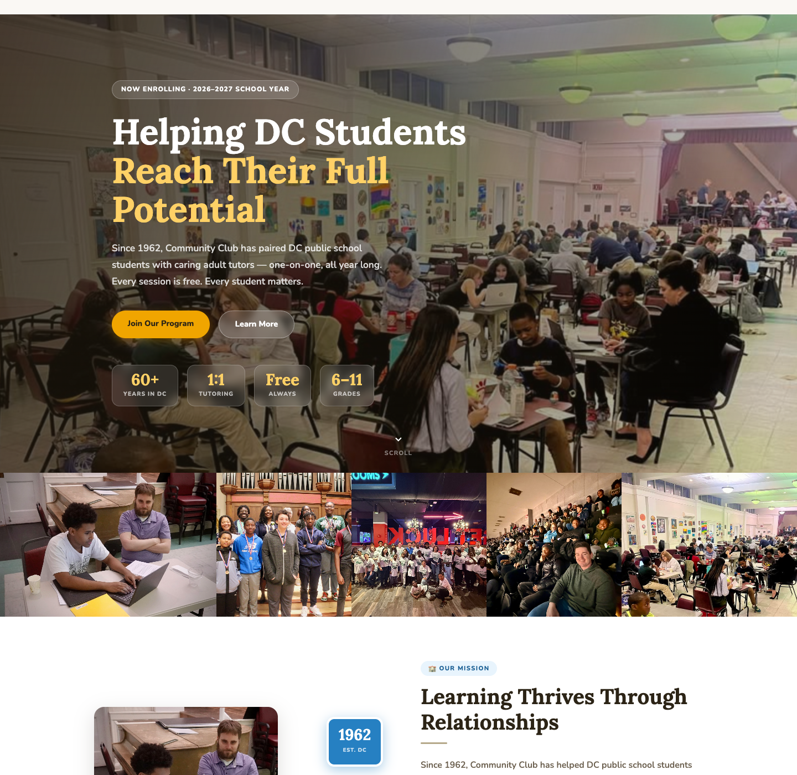
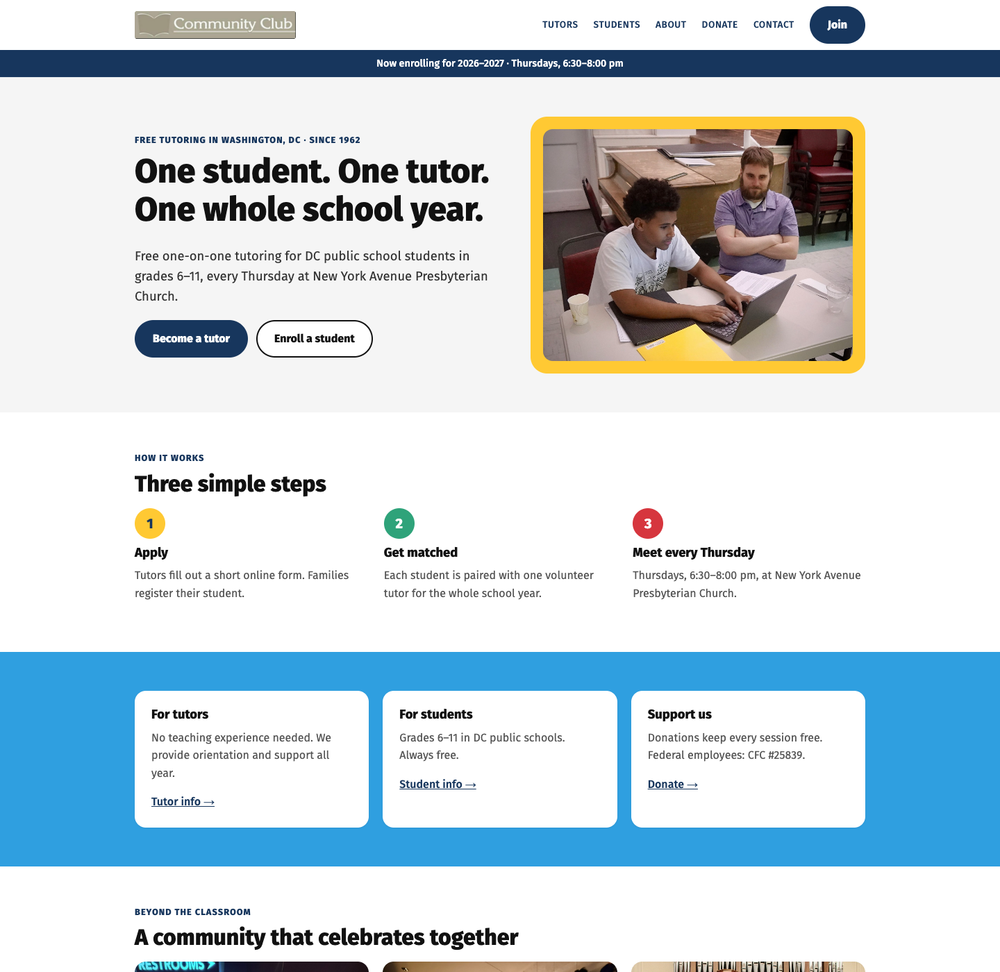
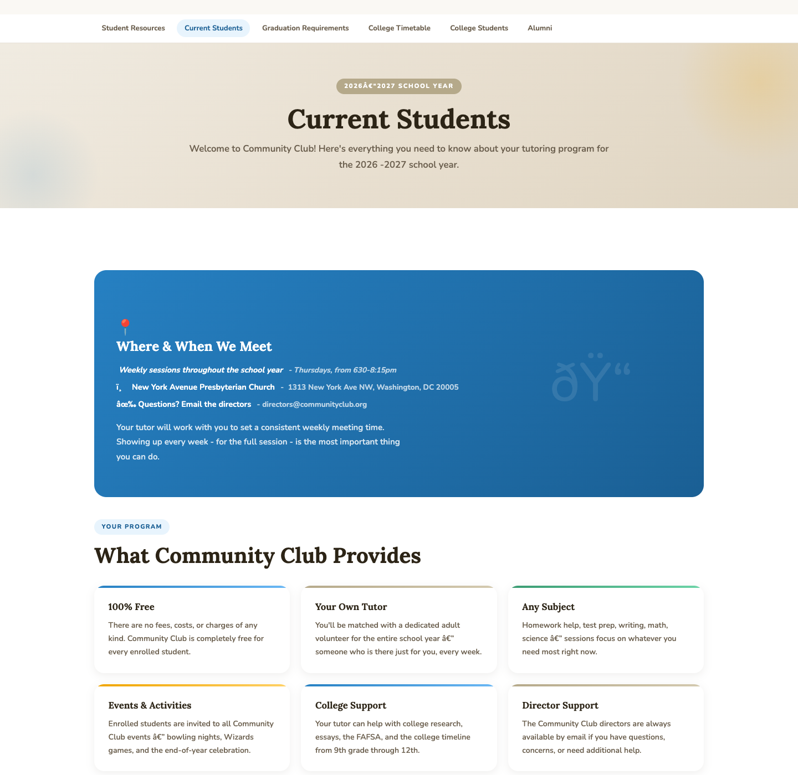
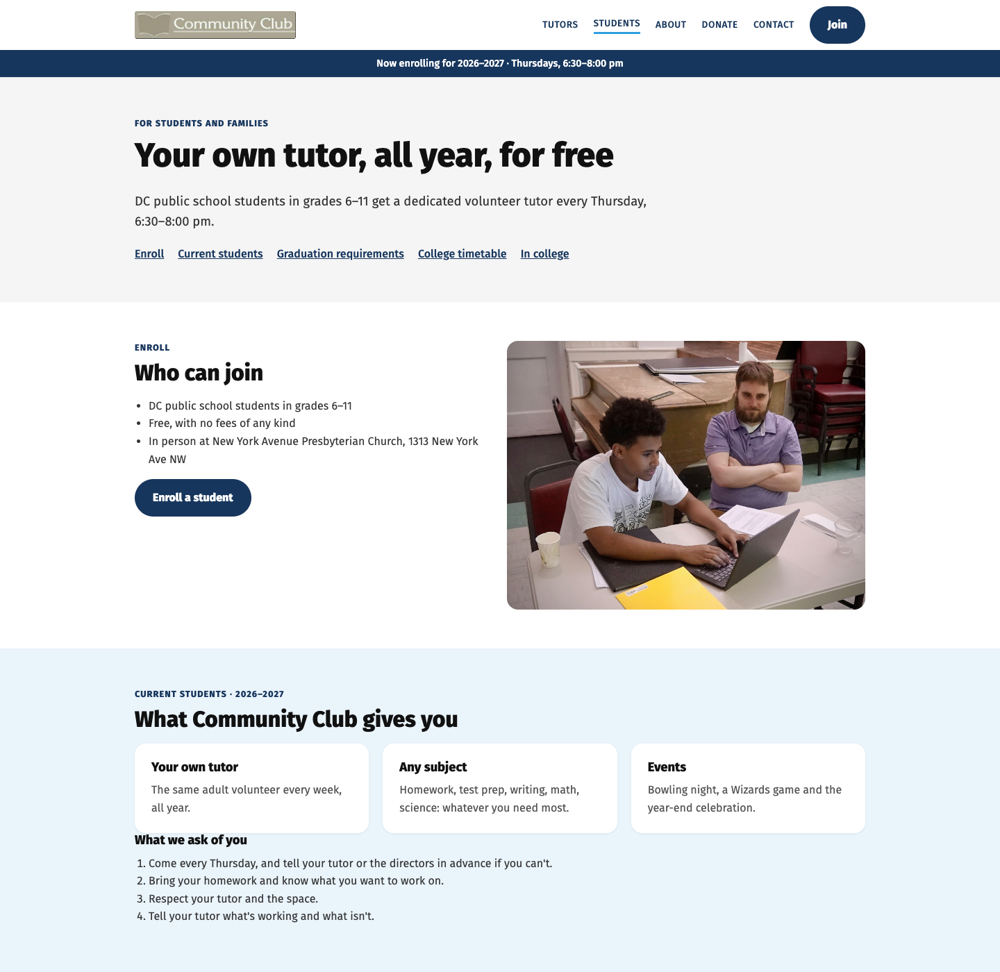
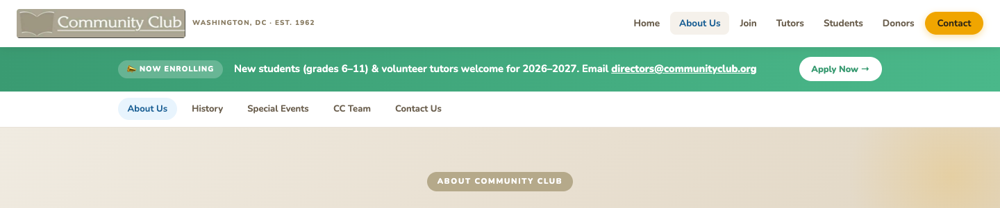
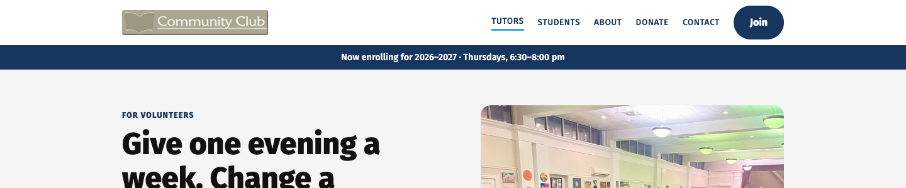

A proposal for the director
A simpler Community Club website
Today's site has 22 pages, two different sub-menus, and a lot of moving parts. This mockup shows the same information in 7 pages, with one menu and one look.
Open the mockupWhat changes
22 pages → 7
Home, Join, Tutors, Students, About, Donate, Contact. No sub-menus.
Apply in one click
The Join button is on every page and leads to one clear place to apply.
One look
One font, one set of colors, two button styles, nothing moving.
Before and after
Before: homepage (no menu at all)

After: homepage

Before: Current Students (garbled text)

After: Students

Before: three bars and two menus (22 pages)

After: one menu (7 pages)

Worth fixing on today's site, redesign or not
- The homepage, Join, Current Students and Orientation pages have no menu or footer.
- Current Students shows garbled characters (its character-set setting is wrong).
- Pages disagree on the school year (three different years appear) and on session times. Correct: 2026–2027, Thursdays 6:30–8:00 pm.
- Tutors are told both to email and to use the Google Form. Correct: the Google Form.